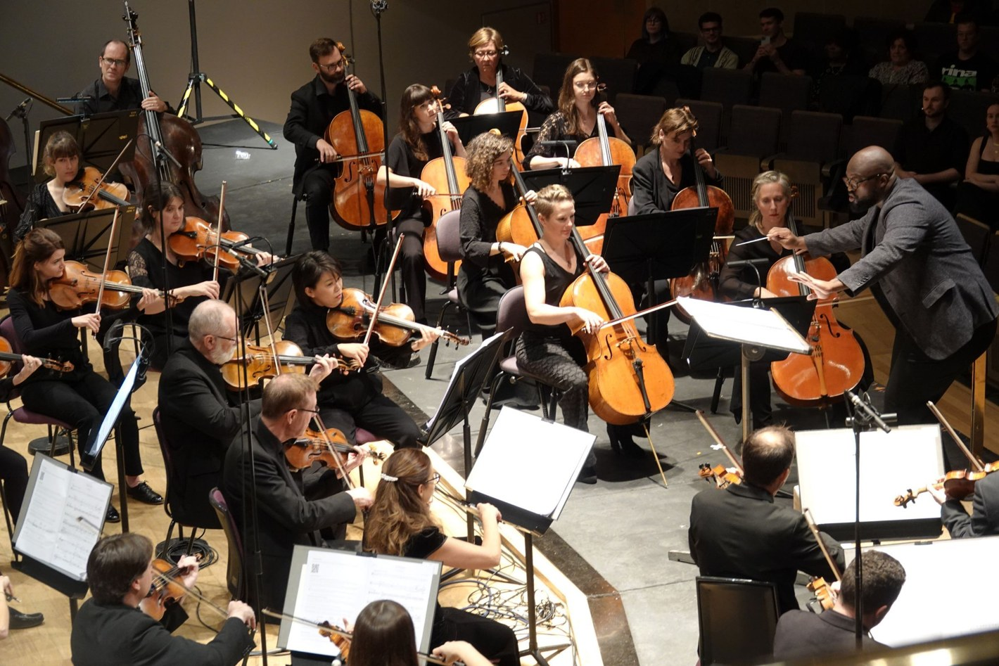
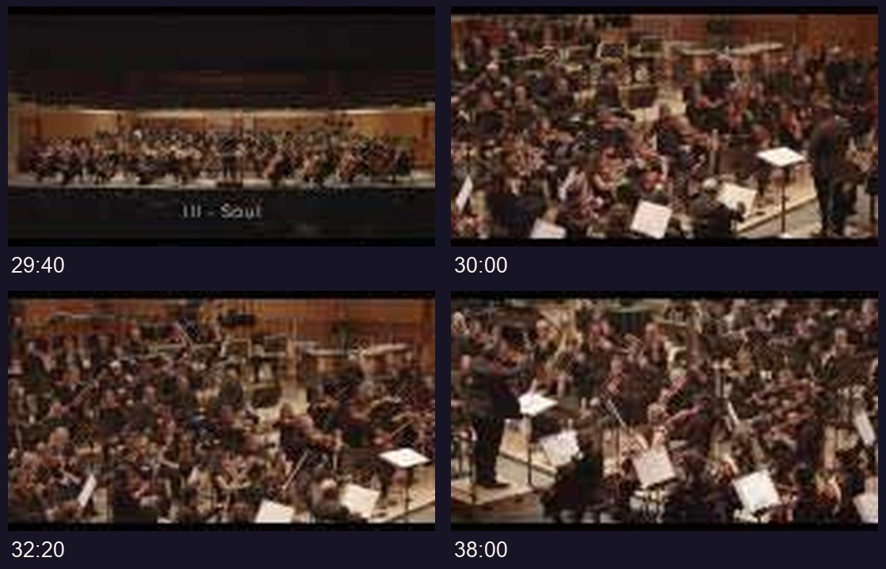
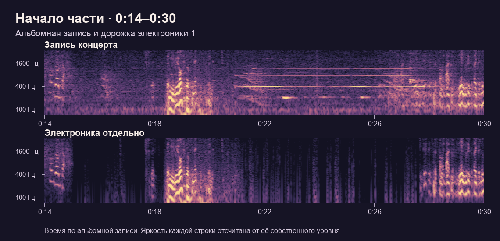
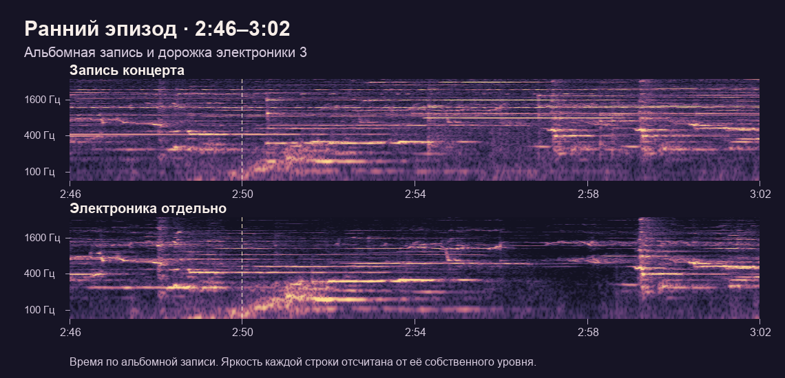
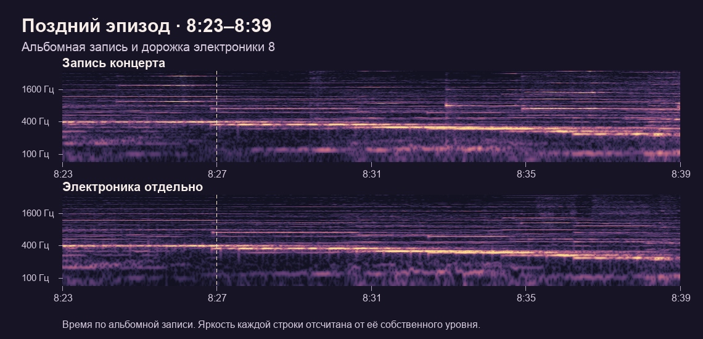

Концепция
Осенью 2022 года на сцене Bridgewater Hall в Манчестере BBC Philharmonic исполнил Silicon Роберта Лейдлоу.10 В третьей части, Soul, к музыкантам присоединился звук, созданный моделью на материале радиопередач этого же оркестра. В архиве оказались и сами выступления, и всё, что обрамляет концерт по радио: объявления, настройка инструментов и аплодисменты.1 Модель научилась воспроизводить черты этих звуков. Композитор отобрал получившийся материал, собрал из него электронную партию и написал музыку для оркестра, который должен был играть с ней на одной сцене.2
Вопрос возникает в самом начале Soul. Лейдлоу просит струнные, медные и ударные играть приёмами, дающими звуки без отчётливой высоты. Он подбирает их так, чтобы приблизить живую партию к звучанию электроники.2 Позже оркестр в нескольких местах подражает материалу модели ещё более прямо. ИИ, в свою очередь, был обучен на записях этих музыкантов.1 Поэтому можно ошибиться в обе стороны: принять необычный живой звук за синтез или принять знакомый тембр в электронной дорожке за игру музыканта. Название «Оркестр, которого нет» относится к этому второму оркестру, для которого прошлые выступления настоящего стали материалом.
Гипотеза состоит в том, что при прослушивании Soul источник звука распознаётся по тем же признакам, что и в других ситуациях: как он начинается, держится и затихает, есть ли у него устойчивые высота и окраска.78 Композитор может дать похожий признак обоим источникам. Тогда он перестаёт подсказывать происхождение звука, хотя по-прежнему помогает расслышать сам звуковой жест. Для проверки гипотезы выбраны три коротких эпизода. В начале рассматриваются шумовой всплеск и следующие за ним тянущиеся звуки, в раннем эпизоде — на поднимающийся рисунок, в позднем — на протяжённый тон, который на первый взгляд легко принять за часть оркестровой фактуры.
Для всех трёх эпизодов доступны концертная запись и отдельно опубликованная стереодорожка электроники.34 Совместив их, можно увидеть и услышать, какие конкретные события присутствуют в обеих версиях. Сначала рассматривается концертный фрагмент, затем тот же момент сопоставляется с отдельной электронной дорожкой. В дополнительной паре одна запись взята из первой части Silicon, где, по описанию Лейдлоу, весь звук производят живые музыканты.2612 Вторая взята из отдельной электроники к Soul. Эта пара даёт два образца с известным происхождением звука.
Работа начинается с устройства пьесы и сопоставления концертной записи с электроникой. Затем идут три сопоставления звука и спектрограмм. Далее рассматриваются исследования тембра и того, как слух связывает отдельные звуки с их источником.789 Замеры показывают, где можно подтвердить происхождение события и какие его признаки доступны слушателю. Собственная слуховая догадка остаётся отдельным наблюдением. В выводе рассматривается художественная роль этого сходства между живым оркестром и звуком из архива.
Оркестр играет со своим архивом

Soul — заключительная часть Silicon. BBC Philharmonic играл под управлением Вимбайи Казибони.5 Электронная партия была подготовлена заранее. По описанию Лейдлоу, она состояла из дорожек, которые запускались по ходу исполнения. Так у оркестра сохранялась возможность играть в собственном темпе. Электронные звуки выводились через четыре колонки вокруг исполнителей.26 Альбомная запись сводит концерт в стерео.13 Её слушатель слышит уже другую пространственную картину, что может повлиять на определение источника звука.
Радиоархив даёт модели соседство звуков, которое редко попадает в запись отдельной ноты. За речью ведущего может следовать настройка, затем музыка и аплодисменты. Лейдлоу считал эти события частью звуковой памяти именно этого оркестра.1 Он также подготовил набор фрагментов с речью и другими звуками эфира. В авторских заметках о результатах есть образцы, напоминающие речь, аплодисменты и оркестровое звучание.2 Эти описания относятся к работе моделей в целом. В трёх отрывках происхождение конкретных звуков проверяется по опубликованной дорожке.
Модель произвела фрагменты аудио. Лейдлоу выбирал, какие из них использовать, накладывал фрагменты друг на друга, распределял их по каналам и решал, когда оркестр должен отступить или откликнуться.2 Слышимый результат — музыка, построенная из этих решений. В анализе обозначение «ИИ» означает конкретный способ получить звук в электронной партии. Выбор звуков, их расположение во времени и живое исполнение имеют собственных авторов и исполнителей.5

Запись премьеры использована как источник кадров и для сверки действий исполнителей.17
Когда виден смычок или удар по инструменту, можно сопоставить жест со звуком. Но камера выбирает один ракурс и часто показывает только часть сцены. При анализе сначала сопоставляются аудиозаписи. Видео помогает уточнить, какое действие могло вызвать слышимый звук. Из опубликованной концертной записи можно увидеть участие музыкантов в этом эпизоде,5 а для указания конкретного инструмента нужно сверять видимое действие с моментом звука.
В первой части Mind ИИ участвовал в создании нотного материала. По партитуре играют люди, и слышимый звук производят их инструменты.16 В Soul модель генерирует само аудио для электронной партии.2 В исследовании рассматривается происхождение слышимого звука. Поэтому эпизод из Mind даёт пример живой игры даже там, где на написание нот повлиял алгоритм.
Сопоставление записей
В каждом примере сопоставлены концертная запись и отдельная электронная дорожка. Bandcamp открывает полные части альбомной записи, а Google Диск — полные электронные дорожки. Нужные моменты указаны рядом с плеерами.34
Всплеск слышен около 0:18 в альбомной записи и около 0:36 в электронной дорожке 1. После него в концертной записи слышны протяжённые звуки.
Восходящий звук с переходом к устойчивой высоте слышен около 2:50 в альбомной записи и около 0:34 в электронной дорожке 3.
Протяжённый тон выделяется около 8:27 в альбомной записи и около 0:26 в электронной дорожке 8. В обеих дорожках можно проследить, как он постепенно опускается.
В дополнительной паре сопоставлены два восьмисекундных фрагмента. Первый взят из Silicon: Mind (0:55–1:03 в альбомной записи), где звук производят музыканты.612 Второй взят из электронной дорожки 8 к Soul (0:24–0:32).4
Начало. Всплеск и тянущиеся звуки

Дорожка электроники 4, файл 1, совмещена с альбомной записью 3. Пунктир отмечает выбранный момент около 0:18. Горизонталь — время, вертикаль — частота.
Около 0:18 на обеих спектрограммах начинается короткий участок с несколькими яркими линиями, которые быстро меняют высоту. Участок повторяется в концертной записи и в электронной дорожке.34 Если в первом прослушивании он показался жестом, сыгранным на инструменте, здесь можно точно указать, что в этом жесте есть сгенерированный звук. Концертный фрагмент одновременно содержит другие звуки, и это делает догадку сложнее.
После всплеска в концертной записи становятся видны протяжённые линии примерно около 400 и 800 Гц.3 В этом месте отдельная электроника показывает гораздо более слабый рисунок без тех же устойчивых линий.4 Выровненные записи позволяют выделить последовательность: сначала спектральное движение, общее двум версиям, затем события, которые прежде всего слышны и видны в концерте. Их полную инструментовку по одному графику установить трудно.
Лейдлоу пишет, что для начала Soul выбрал звуки струнных, ударных и медных без ясной высоты, чтобы они соседствовали с зернистой электронной фактурой.2 Это сходство слышно при сопоставлении двух записей начала. Слышимый шум может принадлежать живому способу игры или быть частью электроники. Какой из них нам представляется, зависит от развития звука в моменте и от того, с чем он соседствует.
Резкое изменение в звуке может привлечь внимание независимо от источника.7 Когда слушатель затем слышит сходный всплеск без оркестра, у него появляется новая подсказка для следующего прохода. Догадка на первом прослушивании и узнавание после сверки отвечают на разные вопросы. Первое показывает, что мы приписываем источнику сами. Второе позволяет услышать подтверждённую деталь внутри общего звучания.
Ранний эпизод. Звук поднимается

Дорожка электроники 4, файл 3, совмещена с альбомной записью 3. Пунктир отмечает выбранный момент около 2:50.
Около 2:50 в обеих версиях в нижней части графика возникает подъём. Через секунду за ним различима группа более устойчивых полос. В альбомном сведении поверх неё есть дополнительные линии, особенно в верхней части спектра.3 Здесь легче сопоставить не короткий удар, а траекторию звука: где он поднялся, как изменился и сколько держался. Совпадение по времени и форме подтверждает вклад электроники в этот жест.4
Когда у звука есть направленное движение, легко представить, что кто-то меняет положение смычка, дыхание или усилие. По этому признаку нельзя определить конкретный инструмент. Полезно описать, что слышно: плавное ли движение, есть ли ступени, где звук задерживается. Уоррен и Вербрюгге показали на примере разбивающегося и отскакивающего стекла, что изменения во времени помогают узнавать действие даже при сохранении части спектральных признаков.9 В разбираемом примере возникает другой вопрос: подсказывает ли похожее на действие движение действительно живого исполнителя?
При сопоставлении подъёма важно выделить конкретный звуковой жест. В многослойной записи в одну и ту же секунду могут звучать разные события, поэтому описание движения и тембра помогает уточнить, какой именно звук сравнивается.
Поздний эпизод. Долгий тон

Дорожка электроники 4, файл 8, совмещена с альбомной записью 3. Пунктир отмечает выбранный момент около 8:27.
Ближе к 8:27 на обеих спектрограммах тянется заметная полоса в районе нескольких сотен герц. К концу отрывка она постепенно опускается. Похожее движение видно в концертной записи и в отдельном файле электроники.34 Другие линии наслаиваются сверху, но этот след можно проследить через весь отрывок. Такой звук легко описать как длинную оркестровую ноту. Именно поэтому важно проверить догадку по дорожке.
Устойчивые или медленно меняющиеся частоты дают слушателю основание связать звук с определённой высотой.78 Это свойство присутствует у живых и сгенерированных звуков. В этом отрывке сходство тембров можно обсуждать конкретно: есть устойчивый компонент, рядом с ним другие частоты, и весь рисунок развивается без резкого обрыва. Слышится ли он как сыгранный человеком, приходится выяснять при прослушивании.
Ровное изменение высоты, окраска и положение тона в общем звучании помогают выделить его на слух. Чтобы установить источник, это наблюдение сопоставляется с отдельной дорожкой.
Лейдлоу описывает общий путь электронной партии от звуков радиопередачи и шумовых фактур к более явному подобию оркестра.2 Поздний пример согласуется с этим направлением: здесь в самой электронике отчётливо видны протяжённые компоненты.34 Тема двойника становится осязаемой именно там, где привычное качество оркестрового звука возникает из другого процесса. Для этого сопоставления достаточно наблюдения над отдельной дорожкой.
На что опирается слух
Первое — вступление. Есть ли удар, шорох, нарастание или почти незаметное появление? Второе — дальнейшее движение. Держится ли высота, меняется ли окраска, затихает ли звук постепенно? Третье — окружение. Какие соседние звуки слышны как часть того же действия? Эти три признака используются для описания каждого из сопоставляемых эпизодов.
В опытах Пола Айверсона и Кэрол Крумхансл участники сравнивали оркестровые тоны целиком, только их начало и часть с удалённым началом. Оценки сходства сохраняли связь с полной нотой в обоих случаях. Значимыми оказались и временное развитие, и распределение энергии по частотам.7 Для Silicon: Soul это основание прислушиваться к продолжению звука даже тогда, когда начало показалось знакомым. Опыт с отдельными тонами служит ориентиром для анализа, а в концертной записи звуки постоянно накладываются друг на друга.
Альберт Брегман и Стивен Пинкер показали на простых тонах, что предшествующая последовательность влияет на то, слышим ли мы два одновременных компонента вместе. Если один из них продолжает уже начатую линию, его легче отнести к ней.8 В концерте соседство сложнее, но тот же вопрос полезен для чтения партитуры. Можно принять звук за часть живой фразы, потому что он приходит в подходящий момент и похож на её продолжение.
У живого оркестра есть узнаваемый набор признаков, но музыканты умеют менять их расширенными приёмами.6 Электронная партия, обученная на записях, способна сохранить отдельные черты знакомого действия.12 Так возникают два вида ошибки. Одна начинается с мысли «так звучит инструмент». Другая начинается с мысли «музыкант так не сыграет». В Soul композиция создаёт материал для обеих догадок.
Место в зале, колонки, наушники и знакомство с оркестровыми приёмами могут изменить то, что слышно первым. На концертной площадке электроника шла из четырёх колонок вокруг оркестра.2 В альбомном сведении у слушателя есть стереопанорама и свои условия воспроизведения.313 Сравнение здесь относится к опубликованной записи. Знакомство с отдельной дорожкой может изменить восприятие концертной записи при повторном прослушивании.
Как проверены совпадения
Концертные отрывки взяты из трека Silicon: III. Soul на альбоме Reality Eaters. NMC Recordings указывает, что запись сделана на премьере 29 октября 2022 года.313 Для сверки использованы отдельные электронные дорожки 1, 3 и 8 из папки, опубликованной самим Лейдлоу.24 Их нумерация — это название файлов, а время начала третьей части в видео отличается от времени в альбоме.5 Все графики в разборе размечены по альбомному треку.
В альбомной записи всплеск находится на 0:14–0:30, подъём — на 2:46,33–3:02,33, долгий тон — на 8:22,78–8:38,78.3 В отдельной электронике этим отрывкам соответствуют файл 1 (0:32,06–0:48,06), файл 3 (0:30–0:46) и файл 8 (0:22–0:38).4
Для совмещения дорожек сопоставлялись короткие участки электронной и концертной записей. Искомый сдвиг определялся по наибольшему совпадению формы сигнала.34 Для поиска использована монофоническая копия с частотой дискретизации 1,6 кГц. Для спектрограмм использованы копии с частотой дискретизации 8 кГц. На графиках показаны отдельные участки, где сдвиг подтверждается совпадающими событиями. В разных местах записи могут отличаться монтаж и уровень, поэтому для каждой пары использован свой сдвиг.
Если выбранный жест обнаруживается в электронной дорожке и в том же месте концертной записи, этот жест можно отнести к электронике. Сложнее разобрать всё, что звучит одновременно. Разница между дорожками включает живые звуки, акустику зала и особенности сведения. Для точной атрибуции отдельного вступления музыканта нужны партитура или видимый жест, совпадающий с записью.56 В трёх разборах анализируются события, подтверждённые по электронной дорожке.4 Пара с Mind добавляет случай с подтверждённым живым исполнением.212
Если собирать ответы нескольких человек, всем нужны одинаковые фрагменты и одинаковый порядок этапов. Сначала каждый описывает выбранное событие и указывает предполагаемый источник без подсказки. Затем можно дать сверку. Порядок двух отдельных образцов полезно менять между слушателями, чтобы буква или место в последовательности не превращались в подсказку. Сопоставление записей подтверждает происхождение отдельных звуков. Общую точность распознавания можно оценить в отдельном эксперименте с участниками.
Вывод
В трёх эпизодах удалось выделить звуки, которые входят в электронную партию и слышны в концертном сведении. Это быстрый меняющийся рисунок около 0:18, подъём около 2:50 и долгий тон около 8:27.34 По форме они заметно отличаются друг от друга. Каждый можно прослушать без концертного окружения и затем найти внутри него.
Между «я расслышал отдельный звук» и «я правильно определил его источник» есть ещё один шаг. На нём знакомый тембр, форма вступления или способ перехода к следующей ноте могут оказаться полезными, а могут обмануть. Отдельные дорожки позволяют проверить конкретную догадку. Для ответа о том, как часто слушатели угадывают источник, потребовалась бы серия прослушиваний с участниками.
Лейдлоу поместил на одной сцене музыкантов и звучание, полученное из их собственного архива.12 Когда живой звук начинает походить на заготовленную электронику, а электроника напоминает игру, становится трудно отнести знакомые признаки к одному источнику. Так в пьесе появляется «оркестр, которого нет»: его можно услышать в записи, а затем обнаружить, что привычный оркестровый жест принадлежал звуковому двойнику. И наоборот, то, что с первого раза показалось машиной, могли сыграть люди.
В Silicon: Soul происхождение выбранных звуков можно проверить. До сверки слушатель судит по признакам, которыми пользуются и живые музыканты, и электроника. Поэтому самый содержательный ответ даёт сравнение двух вещей: что удалось отнести к источнику на первом прослушивании и какой именно звук можно подтвердить по отдельной дорожке. Такое сопоставление позволяет проверить первое слуховое впечатление по отдельной записи.
Источники
- Laidlow R. Silicon : programme note // Robert Laidlow. — Текст : электронный. — URL: https://www.robertlaidlow.co.uk/infosilicon (дата обращения: 20.11.2026).
- Laidlow R. Silicon for Orchestra and Artificial Intelligence // Proceedings of the 4th Conference on AI Music Creativity. — 2023. — Разд. 4. — URL: https://aimc2023.pubpub.org/pub/wbt654g2/release/1?readingCollection=4d9db16c (дата обращения: 20.11.2026).
- Laidlow R. Silicon: III. Soul / BBC Philharmonic, дирижёр Vimbayi Kaziboni // Reality Eaters. — NMC Recordings, 2026. — 13 мин 09 с. — Запись премьеры 29 окт. 2022 г. — Аудио : электронное. — URL: https://robertlaidlow.bandcamp.com/track/silicon-iii-soul (дата обращения: 20.11.2026).
- Laidlow R. III Electronics Stereo Bounces : девять электронных дорожек к Silicon: Soul // Google Drive. — MP3. — Аудио : электронное. — URL: https://drive.google.com/drive/folders/1s5uMEw1KMk4khg4RM-cwppMUenztuYhj (дата обращения: 20.11.2026).
- RNCM PRiSM. Dr Robert Laidlow | “Silicon” and New PRiSM Associate. Материал о премьере в Bridgewater Hall 29 октября 2022 г. и её записи для BBC Radio 3. — 24.04.2023. — https://www.rncm.ac.uk/research/research-activity/research-centres-rncm/prism/prism-news-and-events/dr-robert-laidlow-silicon-and-new-prism-associate/.
- Laidlow R. Artificial Intelligence Within the Creative Process of Contemporary Classical Music : PhD thesis. — Manchester Metropolitan University, 2022. — Разд. 4.2 и 4.4. — DOI 10.83056/mmu.32483628. — URL: https://repository.mmu.ac.uk/articles/thesis/Artificial_Intelligence_Within_the_Creative_Process_of_Contemporary_Classical_Music/32483628 (дата обращения: 20.11.2026).
- Iverson P., Krumhansl C. L. Isolating the dynamic attributes of musical timbre // Journal of the Acoustical Society of America. — 1993. — Vol. 94, no. 5. — P. 2595–2603. — DOI 10.1121/1.407371. — URL: https://pubmed.ncbi.nlm.nih.gov/8270737/ (дата обращения: 20.11.2026).
- Bregman A. S., Pinker S. Auditory streaming and the building of timbre // Canadian Journal of Psychology. — 1978. — Vol. 32, no. 1. — P. 19–31. — Электронная копия в архиве работ Брегмана. — URL: https://themusiclab.github.io/bregman-archive/pdf/1978_Bregman_Pinker.pdf (дата обращения: 20.11.2026).
- Warren W. H., Verbrugge R. R. Auditory perception of breaking and bouncing events: a case study in ecological acoustics // Journal of Experimental Psychology: Human Perception and Performance. — 1984. — Vol. 10, no. 5. — P. 704–712. — DOI 10.1037/0096-1523.10.5.704. — URL: https://pubmed.ncbi.nlm.nih.gov/6238128/ (дата обращения: 20.11.2026).
- BBC Philharmonic | 29 October : программа премьеры // The Bridgewater Hall. — 29 окт. 2022 г. — Текст : электронный. — URL: https://www.bridgewater-hall.co.uk/whats-on/bbc-philharmonic-29-10-22/ (дата обращения: 20.11.2026).
- Wells B. Vimbayi Kaziboni conducts Robert Laidlow’s Silicon with the BBC Philharmonic : фотография. — 2022. — © BBC. — Опубликована в статье Lawrence Dunn от 2 ноября 2022 г. // Bachtrack. — URL: https://bachtrack.com/fr_FR/interview-vimbayi-kaziboni-music-to-change-your-life-bbc-philharmonic-november-2022 (дата обращения: 20.11.2026).
- Laidlow R. Silicon: I. Mind / BBC Philharmonic, дирижёр Vimbayi Kaziboni // Reality Eaters. — NMC Recordings, 2026. — 15 мин 56 с. — Запись премьеры 29 окт. 2022 г. — Аудио : электронное. — URL: https://robertlaidlow.bandcamp.com/track/silicon-i-mind (дата обращения: 20.11.2026).
- Robert Laidlow: Reality Eaters : титры альбома // NMC Recordings. — 2026. — Текст : электронный. — URL: https://nmc-recordings.myshopify.com/products/robert-laidlow-reality-eaters (дата обращения: 20.11.2026).
- Визуальное исследование-лонгрид // Школа дизайна НИУ ВШЭ. — Текст, изображения : электронные. — URL: https://start.hsedesign.com/project/vizualnoe-issledovanie-longrid-8c307da23ee749b2bac399e2a1d5c2b7 (дата обращения: 20.11.2026).
- Основы визуальных исследований // Школа дизайна НИУ ВШЭ. — Текст, изображения : электронные. — URL: https://hsedesign.ru/books/project/5fbbc3ec31504d09b128ebfe2f4dfa6b (дата обращения: 20.11.2026).
- ГОСТ Р 7.0.108–2022. Библиографические ссылки на электронные документы, размещенные в информационно-телекоммуникационных сетях. — Текст : электронный. — URL: https://protect.gost.ru/gost/details/df775619-cc9b-4cea-af6e-83e31a0aab9e (дата обращения: 20.11.2026).
- Thirdman Productions. BBC Philharmonic × PRiSM. Съёмка премьеры Silicon, 29 октября 2022 г. — https://www.thirdman-productions.co.uk/bbc-philharmonic-prism-rncm.
В обложку вошли фрагмент фотографии Бет Уэллс с премьеры Silicon и спектрограмма электронной дорожки 8.4 Фотография опубликована с кредитом © BBC | Beth Wells.11 Кадры из записи премьеры публикует RNCM PRiSM, видеосъёмка и постобработка — Thirdman Productions.5 Спектрограммы построены для этого исследования по опубликованной концертной записи и электронным дорожкам.34 Встроенные плееры открывают альбомные записи и опубликованные электронные дорожки.12